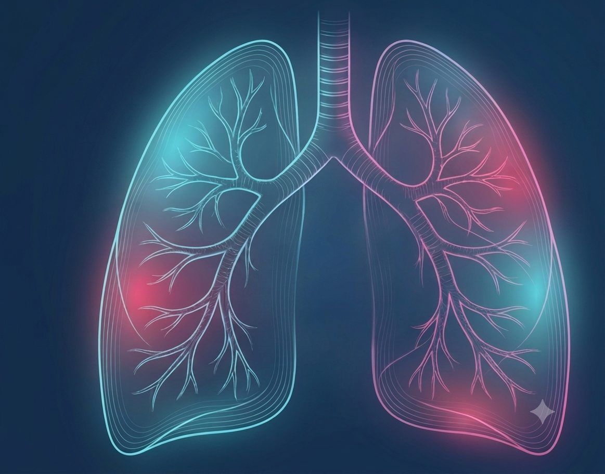

Uma arquitetura em nuvem leve projetada para blindar o diagnóstico contra variações geográficas e modernizar a radiologia comunitária onde ela é mais necessária.

A pneumonia pediátrica lidera a mortalidade global em menores de 5 anos. A disparidade de recursos agrava esse cenário.
Integração total ao ecossistema PACS e acesso rápido a radiologistas, mas com equipes de triagem sofrendo com estresse e fadiga cognitiva sob forte superlotação de leitos.
Alta variabilidade diagnóstica. Clínicas rurais e periféricas enfrentam a ausência de especialistas 24 horas por dia, atrasando intervenções críticas.
Zero Hardware CapEx. Otimização ponta a ponta sem necessidade de investimentos caros em infraestrutura local.
A equipe exporta a radiografia diretamente do sistema PACS para uma interface web segura e intuitiva.
Algoritmo blindado contra vieses geográficos, intensidades de raio-X e variações de marcas de equipamentos globais.
Entrega em tempo real de mapas de calor explicativos e índices de probabilidade direto para a equipe médica de triagem.
Arquitetura centralizada baseada em código aberto em Python.
Modelo de negócios escalável para mercados da América Latina e Ásia.
Converte infraestruturas analógicas tradicionais em nós conectados.
Três pilares fundamentais focados na sustentabilidade e transformação da saúde pública.
Capacitação técnica da enfermagem na linha de frente e criação de novos postos qualificados em engenharia de dados e suporte local para HealthTechs.
Redução direta e mensurável da mortalidade infantil por pneumonia e mitigação do estresse crônico/burnout das equipes médicas generalistas.
O processamento em nuvem leve elimina a pegada de carbono massiva associada a servidores e processamento de hardware locais pesados.
Um projeto idealizado por estudantes de graduação unindo competências em saúde e tecnologia da FPS (Faculdade Pernambucana de Saúde) e Cesar School, com cooperação internacional direcionada.
Equipe Técnica e Clínica: Allysson Wallace, Luann Flor, Gabriela Rosa, Mayara Serafim, Emily Raquel, Luann Flôr.